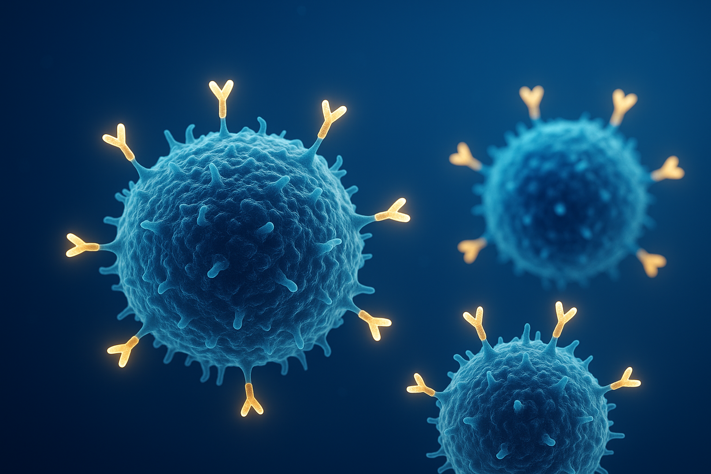

Big Pharma’s Bold Gamble: Why In Vivo CAR-T Could Redefine the Future of Medicine

The Billion-Dollar Bet
Over the past six months, Big Pharma has been quietly making some of its boldest bets in years. Bristol Myers Squibb, AbbVie, and AstraZeneca—three of the industry’s most disciplined players—have each written billion-dollar checks to acquire early-stage biotechs working on in vivo CAR-T therapies.
- AbbVie acquired Capstan Therapeutics for $2.1 billion, gaining access to a CD19 in vivo autoimmune platform.
- BMS signed a $1.5 billion definitive agreement to purchase Orbital Therapeutics, a preclinical startup focused on autoimmune indications.
- AstraZeneca followed with its $1 billion acquisition of EsoBiotech, whose platform targets cancer.
The check sizes are striking—but what’s even more remarkable is what unites these targets:
- All are pursuing in vivo CAR-T therapies, a modality still unproven in humans.
- None have advanced beyond Phase II, yet.
In other words, Big Pharma is not buying products; it’s buying possibility. The biological logic makes sense, but the science remains experimental. Only about 10 percent of drugs that enter clinical trials ever reach approval, according to my calculations using data from The Pharmagellan Guide to Biotech Forecast and Valuation.
Yet these companies are betting billions that this could be the next leap forward in immunotherapy. This piece is not about the deal math—it’s about the scientific and strategic logic driving these decisions.
Revisiting the Science: What CAR-T Really Is
CAR-T stands for Chimeric Antigen Receptor T-cell therapy. At its core, it’s a method of modifying a patient’s immune system—primarily through genetic engineering—so that it can recognize and destroy diseased cells, most commonly in hematological malignancies and diseases.
The immune system operates through two arms:
- Innate immunity: the blunt, immediate defense—macrophages, neutrophils, and natural killer cells that attack anything foreign.
- Adaptive immunity: the surgical strike—T cells and B cells that remember specific pathogens and respond with precision.
When a virus like SARS-CoV-2 infects the body, T cells recognize fragments of the viral spike protein as foreign, triggering an immune response. Once the infection clears, memory cells remain, ensuring the body can mount a faster defense next time.
But here’s where it gets interesting: many cancers disable this detection system. They downregulate the MHC-I complexes that T cells rely on to recognize infected or abnormal cells. CAR-T therapy rewires this process.
How CAR-T Therapy Works
Instead of relying on MHC-I recognition, scientists equip T cells with a synthetic receptor—the CAR—that recognizes surface proteins like CD19, a defining feature of B cells implicated in both liquid tumors and some autoimmune diseases. Once the CAR binds its target, the T cell activates and kills the diseased cell.
This innovation has already transformed outcomes in certain leukemias and lymphomas. Yet these therapies—while life-saving—are also among the most expensive medical interventions ever commercialized.
The Ex Vivo Bottleneck
Every FDA-approved CAR-T therapy today is produced ex vivo—outside the patient’s body.
- A patient’s T cells are extracted via leukapheresis.
- They’re genetically engineered in a lab to express the CAR (often targeting CD19).
- The modified cells are expanded into the millions.
- The patient undergoes lymphodepletion chemotherapy to make room for the engineered cells.
- The CAR-T cells are reinfused to attack the cancer.
It’s a masterpiece of biomedical engineering—and a logistical nightmare. The manufacturing cost alone exceeds $500,000 per patient, and total treatment costs can surpass $1.5 million.
The process remains operationally complex and very difficult to scale efficiently, since every batch is custom-made. Attempts to create “off-the-shelf” allogeneic CAR-Ts from healthy donors have faced complications such as graft-versus-host disease.
The business implication is clear: the science works, but the model doesn’t scale great.
In Vivo CAR-T: The Next Frontier
The next frontier is in vivo CAR-T therapy—a radical idea that flips the model entirely. Instead of extracting and re-engineering T cells, what if we could reprogram them inside the body?
Conceptually, it’s similar to vaccination - guiding the immune system to generate a targeted response without the need to remove and modify cells outside the body. In vivo CAR-T aims to deliver the genetic “blueprint” for a CAR directly to T cells, enabling them to build their own receptors and start fighting disease autonomously.
Two main approaches:
- mRNA delivery (non-integrating): Messenger RNA is sent directly to T cells, instructing them to produce the CAR protein. The genetic code never integrates into DNA, so the effect is temporary but safer. This is the same principle behind Moderna’s COVID-19 vaccine.
- DNA or viral delivery (integrating): DNA—or other genetic material—is delivered using a viral vector, integrating into the T cell genome. The cell then continually produces the CAR, creating a more durable but higher-risk response.
Both methods depend on solving one critical challenge: delivering genetic material precisely to T cells.
The Delivery Race
Two main delivery systems dominate the field:
- Lipid Nanoparticles (LNPs): Microscopic lipid spheres that encapsulate mRNA—molecular couriers delivering genetic instructions. They’re safe, transient, and scalable—but repeat dosing can trigger immune responses against the LNP itself.
- Viral Vectors: Modified viruses—often lentiviruses—engineered to safely insert DNA into T cells. They enable stable, long-term CAR expression but carry risks of insertional mutagenesis or off-target integration.
Our players:
- Capstan Therapeutics: proprietary LNP platform.
- Orbital Therapeutics: LNP-based, optimized lipid chemistry.
- EsoBiotech: lentiviral vector approach.
Interestingly, a couple of these programs (Capstan and Orbital) are initially targeting autoimmune diseases, not cancer, but the underlying platform and principle remain the same. Whoever perfects T-cell-specific delivery will own one of the most valuable platforms in biotechnology.
The Strategic Context
- It collapses a multi-week, million-dollar ex vivo process into a far simpler in-body delivery that could be repeated as needed.
- It broadens the range of treatment possibilities across autoimmune and oncology indications, offering more choice to patients and clinicians alike.
- It creates the potential for a scalable gene-delivery platform, not just a product.
But it’s also a venture-scale risk inside a mature industry. These are preclinical assets with no human data. Success would redefine medicine; failure would still be instructive. In that sense, pharma isn’t just buying technology—it’s buying optionality on the future of therapeutic delivery.
The Road Ahead
The scientific hurdles remain formidable: target specificity, immune-response management, and safe genomic integration are all unresolved. Clinical readouts over the next few years will determine whether this bet pays off—or becomes another cautionary tale in biotech’s long history of over-promised revolutions.
Still, the long-term vision is clear: if we can teach the body to make its own CAR-T cells safely, we’re no longer talking about cell therapy—we’re talking about programmable medicine: a living drug.
While hematologic cancers are the initial proving ground, the true endgame is solid tumors, which account for roughly 90% of all cancer cases worldwide. Whoever cracks CAR-T for solid tumors won’t just win a market—they’ll change the rules of oncology.
Final Take
In vivo CAR-T sits at the intersection of immunology, genetics, and finance-driven pharmaceutical strategy. It’s high-risk, high-reward science with multi-billion-dollar implications.
Pharma’s recent moves aren’t acts of reckless optimism—they’re strategic plays anticipating where medicine is headed. Whether these bets yield the next immunotherapy breakthrough or serve as billion-dollar lessons, one thing is clear: the era of reprogramming the human body from within has already begun.